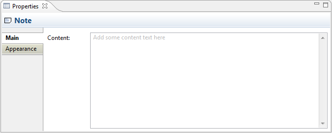
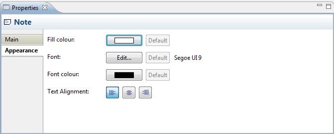

Selecting a Note in a View means that you can edit or view the following properties in the Properties Window.
The Main Tab
| Content: | The textual content for the Note |

Editing the "Main" Properties for a Note
The Appearance Tab
| Fill colour: | Specifies the fill colour for the selected element. The "Default" button sets the fill colour to the default setting. |
| Font: | Specifies the font used for the text in the selected element. The "Default" button sets the font to the default setting as set in Preferences. |
Font colour: |
Specifies the colour of the font used for the text in the selected element. The "Default" button sets the fill colour to the default setting. |
| Text Alignment: | Align text in the selected element to Left, Centred or Right. |

Editing the "Appearance" Properties for a Note